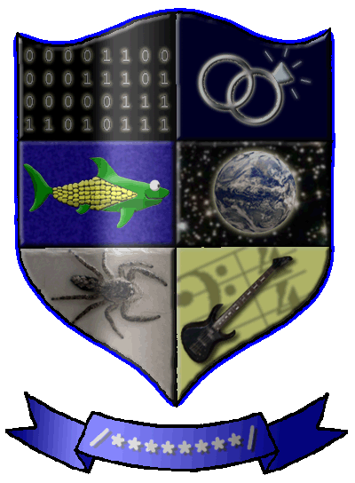

Coat of Arms
In a class I took recently, we were assigned to do a coat of arms (without our names or initials on it) that represented each of us personally. Here's mine.

The top left panel represents the flow of time between my first programming experiences and the present day. The color is that of the command prompt and GW-BASIC editor on my very first computer -- the one on which I first learned to program. The binary values are also of significance: the first byte is the month in which I married Michelle, the second is the day, and the last two are the year. The use of binary in general signifies my involvement with technology from video games to robots to websites and beyond.
The center left panel shows the CornShark. The history of this character is heavily significant to my life. Long story as short as possible: Michelle and I played a game called Shark! Shark! which had some funny sound effects that she started imitating before attacking me (just playing, you know). Thus, she became the Shark. In an episode of The Grim Adventures of Billy and Mandy, Billy named his mom (who had become a child) "Corn", and Michelle applied the nickname to me as well. When we played with the idea of starting our own educational software development organization, I commented that the name of the company should be something that reflects the both of us. She said without hesitation, "Like what? CornShark?" Later, when I needed a character to exist in a new game world I was creating, I decided to make the CornShark into an actual, playable game character. So I am Corn and she is Shark, and the CornShark symbolically joins us.
The bottom left panel simply shows an instance of my favorite animal. It's a male jumping spider that Michelle photographed one day last summer. Spiders are among the most beautiful, beneficial, and misunderstood creatures on this entire planet. I'm especially fond of jumping spiders because they're so cute and unique.
The top right panel shows two wedding rings, clearly symbolizing the most important of all my designations -- that of being Michelle's husband. The colors are those of our wedding -- dark blue and silver.
The center right panel shows two things: First, it's Earth, the planet where I live. Second, it's seen from space, and I have always been fascinated by space for as long as I can remember.
The bottom right panel is a picture of my favorite rock instrument -- my Alvarez bass. To reinforce the rock bass aspect, I put a bass clef and a 4/4 time signature in the background.
Finally, the bottom banner: We were forbidden to put our names on it, so I just put comment markers in the style of C, C++, Java, and others, and filled the area between them with wildcards. I think the meaning speaks for itself.
So my coat of arms doesn't even come close to completely defining me, but I feel that it does a great job of summarizing and representing my most important qualities and attributes.